- 00 开篇词 为什么中间件对分布式架构体系来说这么重要？.md
- 01 中间件生态（上）：有哪些类型的中间件？.md
- 02 中间件生态（下）：同类型的中间件如何进行选型？.md
- 03 数组与链表：存储设计的基石有哪些？.md
- 04 红黑树：图解红黑树的构造过程与应用场景.md
- 05 多线程：多线程编程有哪些常见的设计模式？.md
- 06 锁：如何理解锁的同步阻塞队列与条件队列？.md
- 07 NIO：手撸一个简易的主从多Reactor线程模型.md
- 08 Netty：如何优雅地处理网络读写，制定网络通信协议？.md
- 08 加餐 中间件底层的通用设计理念.md
- 09 技术选型：如何选择微服务框架和注册中心？.md
- 10 设计原理：Dubbo核心设计原理剖析.md
- 11 案例：如何基于Dubbo进行网关设计？.md
- 12 案例：如何实现蓝绿发布？.md
- 13 技术选型：如何根据应用场景选择合适的消息中间件？.md
- 14 性能之道：RocketMQ与Kafka高性能设计对比.md
- 15 案例：消息中间件如何实现蓝绿？.md
- 16 案例：如何提升RocketMQ顺序消费性能？.md
- 17 运维：如何运维日均亿级的消息集群？.md
- 18 案例：如何排查RocketMQ消息发送超时故障？.md
- 19 案例：如何排查RocketMQ消息消费积压问题？.md
- 20 技术选型：分布式定时调度框架的功能和未来.md
- 21 设计理念：如何基于ZooKeeper设计准实时架构？.md
- 22 案例：使用分布式调度框架该考虑哪些问题？.md
- 23 案例：如何在生产环境进行全链路压测？.md
- 大咖助阵 高楼：我们应该如何学习中间件？.md
- 用户故事 学而时习之，不亦乐乎.md
- 用户故事 愿做技术的追梦人.md
- 用户故事 浪费时间也是为了珍惜时间.md
- 结束语 坚持不懈，越努力越幸运.md
17 运维：如何运维日均亿级的消息集群？
你好，我是丁威。
得益于我所处的平台，依托快递行业巨大的业务流量，我所在的公司的日均消息流转量（消息发送、消息消费）已经达到万亿级别，消息中间件在公司的使用也非常广泛。这节课，我会结合自己的实践经验和你一起来看看如何在生产环境中运维消息集群。
集群部署
尽管消息集群都可以灵活地扩缩容，但我们在运维集群时还是不应该搭建太大的集群。因为一旦集群受影响，影响范围会很大。合理规划消息集群尤为重要，结合我的集群规划实践，我提炼出了下面几条经验供你参考。
- 业务场景
核心业务要按业务域进行规划，并且通常采用 RocketMQ。例如我们可以划分出订单、运单、财金等业务域。业务域内尽量独占。
日志采集类通常采用 Kafka，并且也要搭建几套日志集群，做好拆分，控制好影响的范围。
- 应用特点
消息集群的客户端通常使用长连接。但大数据领域很多数据抽取都是批处理任务，而批处理任务使用的是短连接，所以大数据领域这种我们会规划到单独的集群；另外在定时消息、大消息等场景下，也要规划专属集群。
规划了这么多的集群，集群的管理就成了难点。我们专门开发一个消息运维平台 ZMS，它支持在线安装 RocketMQ、Kafka、ZooKeeper 等中间件，安装原理如下：
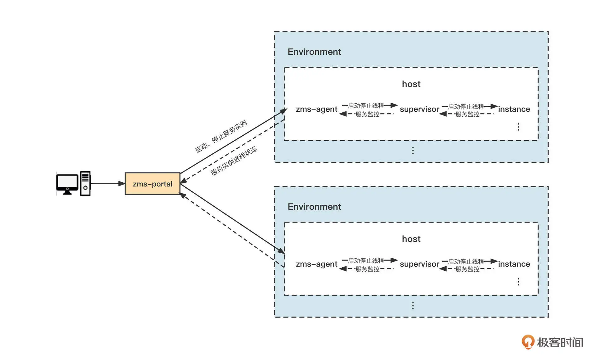
我们对集群部署设计原理中的关键角色一一做个说明。
- service instance
服务实例，它是服务中的一个节点。在同一时刻，一个服务实例只能有一个正在主机中运行的进程。一个服务可能包含多个服务实例。
- zms-agent
zms-agent（ZMS 代理）是 zms-portal 与主机中的服务实例进行交互的桥梁。它可以实现服务实例的启动、停止和重启操作，还能够监控服务实例进程状态。
- supervisor
zms-agent 通过 supervisor 对主机上的进程进行管理，可实现进程状态监控、异常退出、重启等功能。
顺便说一句，ZMS 是通过在主机上安装代理，来实现对主机上服务的控制的，这种控制包括服务启动、停止、重启等操作。同时，我们还可以通过 agent 把服务进程和主机状态上报到 zms-portal，实现对主机和服务进程的监控。
ZMS 目前已开源，可以点击“开源地址”下载。
集群扩容
从运维角度解决了集群的安装部署问题，接下来我们来看看在生产环境中，一般是怎么运维消息中间件的。
中间件的运维必须遵循一个最基本的原则：中间件所做的变更要对业务无感知。即，中间件做的任何变更不需要业务方配合，也不会影响正在运行的业务，当然为了安全起见，还是需要将变更操作通知业务方，做一些必要的检查工作。
我们先来看如何优雅地对集群进行扩容。
“双十一”、618 等大促活动时，各快递公司的业务量往往是平时的几倍。所以，在大促来临之前，我们都会对现有系统进行压测，评估容量，压测后通常会采取扩容等手段以扛住大促前后的巨大流量。那怎么对消息集群进行扩容呢？
我们分别讨论 RocketMQ、Kafka 这两种中间件。
先说 RocketMQ。例如现在已经有一个两主的集群了，部署如下图所示：
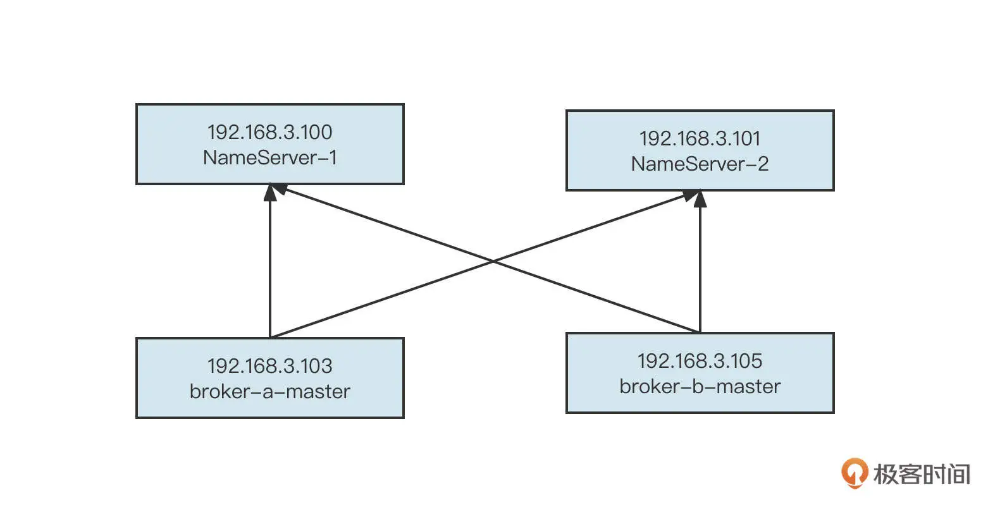
现在需要扩容到 3 个主节点，我们首先要在新添加的机器 192.168.3.106 上也安装一个 Broker，命名为 broker-c。扩容后的部署图为：
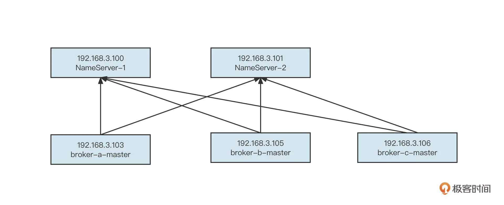
这样就把 broker-c 扩容到集群了。但这个时候你会发现，新增加的 Broker 并没有任何流量，这是因为 broker-c 上目前没有创建任何主题，自然就没有消息写入。
为了快速让 broker-c 上拥有集群内其他节点中的主题定义，我们通常可以拷贝集群内其他节点的主题定义文件，具体要复制的文件路径为：{ROCKETMQ_HOME}/store/config/topics.json 文件。其中，ROCKETMQ_HOME 表示集群的主目录，具体的文件存储如下图所示：
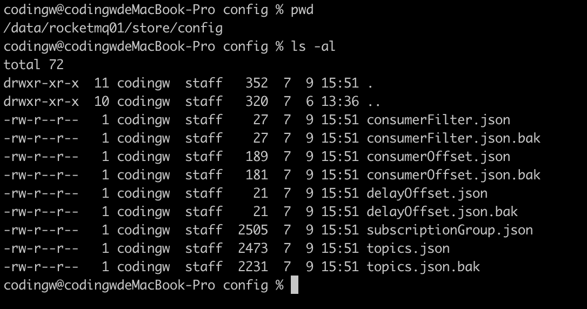
如果 Broker 关闭了自动创建消费组（autoCreateSubscriptionGroup=false），还需要拷贝 subscriptionGroup.json 文件。
这样，再次重启新加入的机器，就可以承担读写流量，实现负载均衡了。
我们再来说一下 Kafka 中集群节点的扩容。
第一步和 RocketMQ 一样，也就是在新节点上安装一个 Kafka，并与原先节点使用相同的 ZooKeeper 集群。这时，节点会扩容到集群中，但是与 RocketMQ 相同，这个节点暂时也不会有任何流量进来。那要如何使新节点承担数据的读写呢？
我们需要进行分区重分配，手动将部分主题的分区分配到新的节点。
在介绍具体的分配方式之前，我们先来看一下 dw_test_topic_0709003 的分区分布情况：
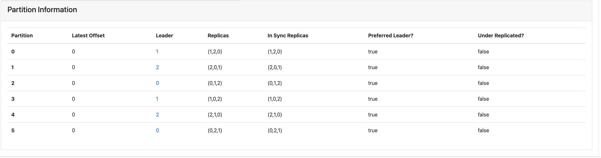
你可以重点关注一下 Leader 这一项，它表示分区所在的 Broker 节点。
好了，下面我们具体来看一下怎么对分区进行重分配。这里总共有三个步骤。
**第一步：**挑选出一部分重要主题，或者是当前 TPS 排名靠前的主题，整理成 JSON 文件。
{"topics":
[
{"topic":"dw_test_topic_0709003"}
],
"version": 1
}
**第二步：**使用 Kafka 提供的 kafka-reassign-partitions.sh 命令生成执行计划。具体命令如下：
./kafka-reassign-partitions.sh --bootstrap-server 127.0.0.1:9092 --topics-to-move-json-file ./tmp/dw_test_topic_0709003-topics-to-move.json --broker-list "0,1,2,4" --generate --zookeeper 127.0.0.1:2181
该命令运行后的截图如下：
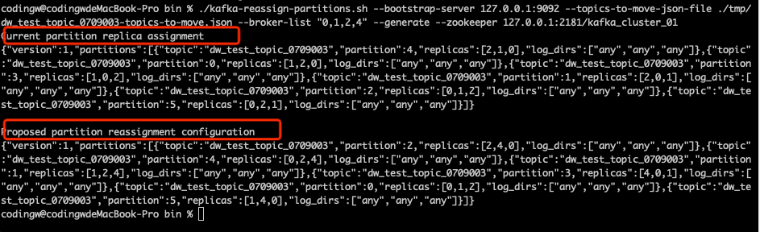
执行命令后会输出下面两部分内容。
-
Current partition replica assignment：表示主题分区迁移之前的结果，通常把这部分内容保存在一个文件中，用于回滚操作。
-
Proposed partition reassignment configuration：分区重新分配后的执行计划。
**第三步：**把上一步生成的执行计划存储到一个 JSON 文件中，然后执行如下命令：
./kafka-reassign-partitions.sh --bootstrap-server 127.0.0.1:9092 --reassignment-json-file ./tmp/dw_test_topic_0709003-reassignment-json-file.json --execute --zookeeper 127.0.0.1:2181/kafka_cluster_01
该命令的执行结果如下图所示：
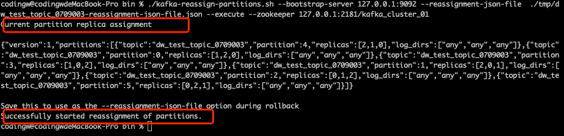
响应结果还会返回迁移之前的分区情况，可用作回滚操作。值得注意的是，这个操作只会触发分区重分配，不会影响客户端的写入和读取。但如果分区的数据比较多的话，由于分区数据需要在节点之间进行迁移，所以需要一个过程。
如果在紧急情况下， 通常在修改操作之前会首先修改主题的存储时间，适当降低存储数据量，这样可以加快数据的迁移。
分区重分配成功后，结果如下：
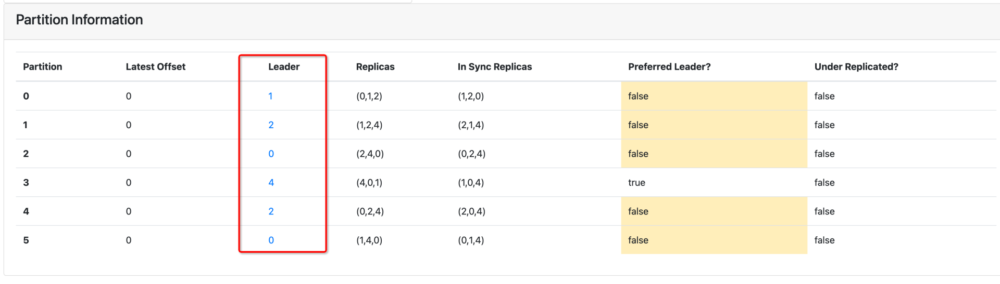
可以看到，新扩容的节点 4 上已经有主分区了，这样它就可以接受数据的读写请求了。
集群缩容
大促结束后，为了节省资源，通常需要对集群进行缩容处理。将节点从集群中移除的基本原则是，存储在这些节点上的消息必须完成消费，否则会造成消息消费丢失。
首先我们来看一下 RocketMQ 节点的缩容。
双十一过后，我们需要将 192.168.3.106 的节点下线，但是，直接把节点从集群中摘除是不可行的。我们通常要先关闭写权限，避免新的数据再写入该节点，然后等消息过期再下线。具体有两个步骤。
**第一步：**关闭节点的写权限。具体命令如下：
sh ./mqadmin updateBrokerConfig -b 127.0.0.1:10911 -n 127.0.0.1:9876 -k brokerPermission -v 4
**第二步：**为了保守起见，通常要等待消息过期后，再关闭 Broker。如果消息的存储时间为 72 小时，那要在关闭写权限 3 天之后才可以下线该节点。在此期间，该节点还是可以提供读取服务，也就是说，存在这个节点的消息仍然可以被消费端消费。
Kafka 的缩容需要分情况处理。
如果 Kafka 集群中所有主题都是多副本的话，这样每一个分区都会有多个副本，并且这些副本会分布在不同的节点上，缩容的时候直接停止一个机器即可。
但如果 Kafka 中有些主题是采取的单副本，要想缩容，就需要将这些单副本的主题再次进行分区重分配，把这些单副本主题的分片转移到其他节点。然后就可以直接停掉机器了。
分区扩容
除了在集群维度扩容和缩容外，无论是 RocketMQ 还是 Kafka 都支持分区级别的扩容。
在 RocketMQ 中为主题进行队列扩容比较简单，只需要执行一条命令：
sh ./mqadmin updateTopic -n 127.0.0.1:9876 -c DefaultCluster -t dw_test_01 -r 8 -w 8
-w 、-r 分别指定扩容后的队列数。其中 -w 表示写队列个数，-r 表示读队列个数，在进行主题扩容时，它们必须一致。
在 Kafka 中扩容分区同样只需要执行一条命令：
./kafka-topics.sh --bootstrap-server 127.0.0.1:9092 --topic dw_test_topic_0709003 --partitions 8 --alter
其中，“–partitions”表示要扩容后的分片数量。
分区缩容
再来看分区缩容。
Kafka 目前不支持分区缩容，也就是说，一个主题的分区数量只能增加不能减少。而 RocketMQ 可以无缝实现缩容。
在 RocketMQ 要减少主题的分区数量，通常需要经过两步。
**第一步：**将主题的写队列更改为缩容后的队列，例如 dw_test_01 这个主题原本有 8 个队列，现在要缩容为 4，就将主题的写队列改为 4。具体的命令如下：
sh ./mqadmin updateTopic -n 127.0.0.1:9876 -c DefaultCluster -t dw_test_01 -r 8 -w 4
**第二步：**等消息达到过期时间后，再将读队列数量变更为缩容后的队列。命令如下：
sh ./mqadmin updateTopic -n 127.0.0.1:9876 -c DefaultCluster -t dw_test_01 -r 4 -w 4
位点重置
在生产实践中，还有一个非常高频的动作是位点重置（回溯）。
RocketMQ 不需要停止消费组就可以进行位点回溯，只需要运维人员执行如下命令：
sh ./mqadmin resetOffsetByTime -g dw_test_mq_consuemr_test_01 -n 127.0.0.1:9876 -t dw_zms_test_topic -s '2022-07-10#10:00:00:000'
这里重点说一下 -s 参数，它表示回溯时间。其中：
-
now 或者 currentTimeMillis 表示当前时间；
-
yyyy-MM-dd#HH:mm:ss:SSS 表示具体的时间戳。在执行命令时，需要严格按照格式，否则会抛出空指针异常，这个错误会让人看得莫名其妙。
运行的结果如下：
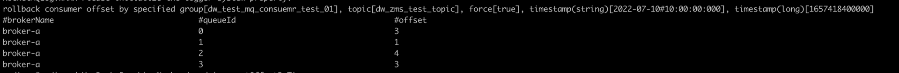
我们再来看一下 Kafka 的位点回溯。
kafka 中在进行位点重置之前，首先需要停止该消费组内所有的消费者，然后执行如下命令：
./kafka-consumer-groups.sh --bootstrap-server 127.0.0.1:9092 --group dw_test_consumer_20220710001 --reset-offsets --to-datetime '2022-07-10T00:00:00.000' --topic dw_test_topic_0709003 --execute
命令的运行结果如下：
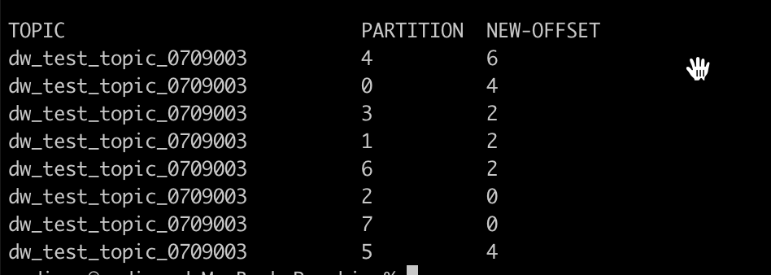
其中，NEW-OFFSET 表示当时的位点，消费组启动时会从该位点开始消费。
RocketMQ NameServer 的扩容与下线
在生产环境中，RocketMQ 还有一个重要组件是 NameServer。它的扩容与缩容也需要特别注意，避免操作过程造成人为的数据不一致。
举个例子，如果现在我们需要将 2 个节点的 NameServer 扩容为 3 个节点，需求如下图所示：
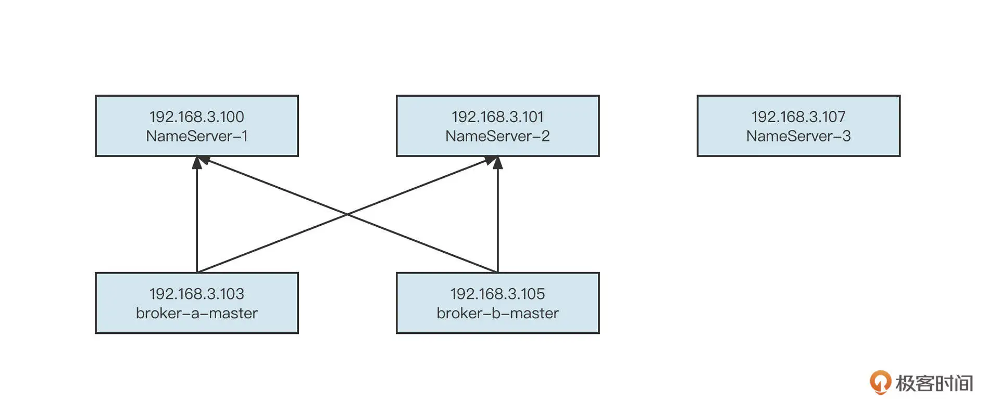
首先要在新的机器上安装好 NameServer。
然后更新两台 Broker 的配置文件，让 Broker 能够感知 NameServer 的存在，具体的配置项：
namesrvAddr=192.168.3.100:9876;192.168.3.101:9876;192.168.3.107:9876
紧接着，依次重启 Broker。
这样，NameServer 就扩容完成了。
乍一看这个过程很简单，但你一定要注意的是，**集群内的 Broker 没有全部重启时，新加入集群的 NameServer 地址是不能让消息发送 / 消息消费客户端使用的。**因为这时候新的 NameServer 上的路由信息会和集群内其他 NamServer 存储的信息不一致。
NameServer 的下线就比较简单了。直接先 kill 掉 NameServer 进程，这时，无论是 Broker、还是消息发送、消息消费客户端都会抛出错误，但这个错误不影响使用。
然后依次更新 Broker 配置文件中的 namesrvAddr，移除已下线的 NameServer 地址并依次重启。
在生产实践中，NameServer 的扩容还是比较少见的，更多的是更换机器。举个例子，192.168.3.100 这台机器由于内存、磁盘等故障，需要被下线。但为了保证 NameServer 节点数量不受影响，我们通常还会在一台新机器上部署一台新的 NameServer。同时，为了避免客户端或 Broker 需要更新 NameServer 列表，更换机器时还要 IP 保持不变。
运维技巧
最后，我们再来看看运维命令。
无论是 RocketMQ 还是 Kafka 都提供了丰富的运维命令，这可以让运维人员更好地管理集群。但是，运维命令这么多，而且每一个命令的参数也很多，我们应该怎么学习这些命令呢？
其实不需要死记硬背，这些运维命令自带帮助手册，运维命令的安装目录就是中间件的 bin 目录。
通过下面的命令，我们可以快速查看 RocketMQ 拥有哪些运维命令：
sh ./mqadmin
该命令的输出结果如下：
sh ./mqadmin
# 该命令的输出结果如下：
The most commonly used mqadmin commands are:
updateTopic Update or create topic
deleteTopic Delete topic from broker and NameServer.
updateSubGroup Update or create subscription group
deleteSubGroup Delete subscription group from broker.
updateBrokerConfig Update broker's config
updateTopicPerm Update topic perm
topicRoute Examine topic route info
topicStatus Examine topic Status info
topicClusterList get cluster info for topic
brokerStatus Fetch broker runtime status data
queryMsgById Query Message by Id
queryMsgByKey Query Message by Key
queryMsgByUniqueKey Query Message by Unique key
queryMsgByOffset Query Message by offset
QueryMsgTraceById query a message trace
printMsg Print Message Detail
printMsgByQueue Print Message Detail
sendMsgStatus send msg to broker.
brokerConsumeStats Fetch broker consume stats data
producerConnection Query producer's socket connection and client version
consumerConnection Query consumer's socket connection, client version and subscription
producerConnectionAll Query all producer's socket connection and client version
consumerProgress Query consumers's progress, speed
consumerStatus Query consumer's internal data structure
cloneGroupOffset clone offset from other group.
clusterList List all of clusters
topicList Fetch all topic list from name server
updateKvConfig Create or update KV config.
deleteKvConfig Delete KV config.
wipeWritePerm Wipe write perm of broker in all name server
resetOffsetByTime Reset consumer offset by timestamp(without client restart).
updateOrderConf Create or update or delete order conf
cleanExpiredCQ Clean expired ConsumeQueue on broker.
cleanUnusedTopic Clean unused topic on broker.
startMonitoring Start Monitoring
statsAll Topic and Consumer tps stats
allocateMQ Allocate MQ
checkMsgSendRT check message send response time
clusterRT List All clusters Message Send RT
getNamesrvConfig Get configs of name server.
updateNamesrvConfig Update configs of name server.
getBrokerConfig Get broker config by cluster or special broker!
queryCq Query cq command.
sendMessage Send a message
consumeMessage Consume message
updateAclConfig Update acl config yaml file in broker
deleteAccessConfig Delete Acl Config Account in broker
clusterAclConfigVersion List all of acl config version information in cluster
updateGlobalWhiteAddr Update global white address for acl Config File in broker
getAccessConfigSubCommand List all of acl config information in cluster
查看每一个命令的具体使用方法，可以使用如下命令：
sh ./mqadmin updateTopic -h
同样 Kafka 的运维命令也在 bin 目录下：
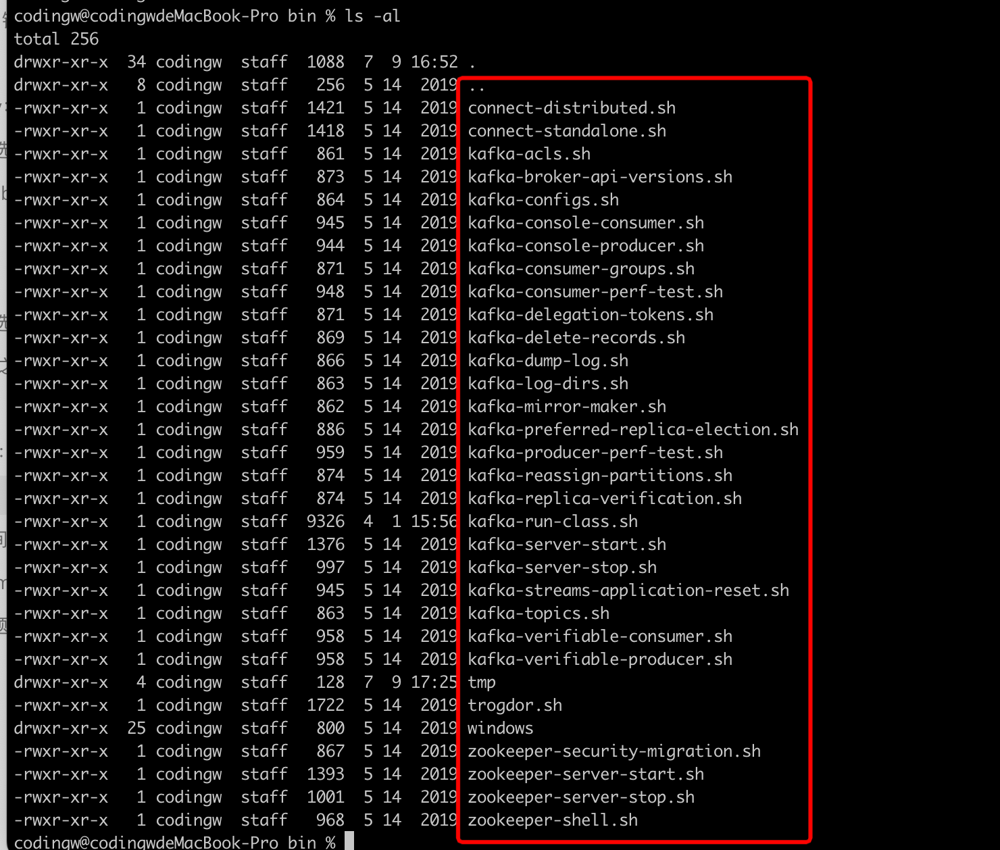
总结
好了，这节课就讲到这里。
中间件的稳定性大于一切，一旦发生故障，影响范围也比较大。所以我们不能把所有的鸡蛋放到一个“篮子”中，而是应该按照使用场景、应用特性等维度对集群进行合理规划，规划出一个一个的小集群。
中间件的运维必须遵循一个最基本的原则，那就是中间件做的变更要对业务无感知，对现有业务的运行无任何影响。
刚才，我结合我的运维实践经验，对集群扩容、缩容、分区扩容、缩容、位点重置、NameServer 下线等常见场景做了演练，你可以对比自己的实际经验进行总结与归纳。
课后题
学完今天的内容，请你思考下面这个问题。
在进行消费位点回溯时，我们说 Kafka 必须先停掉消费者，但 RocketMQ 却不需要，你知道 RocketMQ 是怎么做到的吗？
欢迎你在留言区与我交流讨论，我们下节课见！
© 2019 - 2023 Liangliang Lee. Powered by Vert.x and hexo-theme-book.